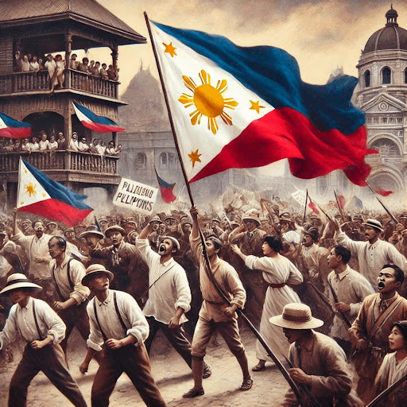

Recto
Itinaguyod ni Claro M. Recto ang isang malaya, makapangyarihan, at may sariling pagkakakilanlang bansa sa pamamagitan ng nasyonalismo, kasarinlan sa politika at ekonomiya, at pagpapalakas ng pambansang identidad laban sa dayuhang impluwensya.
Read More

Renan
Si Ernest Renan ay isang Pranses na pilosopo at manunulat na nagpakilala sa ideya ng nasyon bilang isang espiritwal na prinsipyo at isang "araw-araw na plebisito," kung saan ang pagiging bahagi ng isang bansa ay isang patuloy na pagpili batay sa pinagsasaluhang alaala, kasaysayan, at pangarap para sa hinaharap.
Read More

Anderson
Ayon kay Benedict Anderson, ang nasyon ay isang “imagined community” na umiiral sa imahinasyon ng mga miyembro nito, at nabubuo sa pamamagitan ng pagbabahagi ng wika, kasaysayan, at kultura, na nagpapalakas ng damdamin ng pagkakaugnay at pagkakabilang, at isang modernong konsepto na naging produkto ng nasyonalismo at mga pagbabago sa lipunan..
Read More

Ang Konsepto ng Nasyon Ayon kina Recto, Renan at Anderson
Ang nasyon ay isang masalimuot na konsepto na ipinakita nina Claro M. Recto, Ernest Renan, at Benedict Anderson bilang isang ideya na hinuhubog ng kasaysayan, kultura, at kolektibong kalooban ng mga mamamayan. Para kay Recto, ang nasyon ay isang malayang komunidad na may sariling identidad at soberanya; kay Renan, ito ay isang espiritwal na prinsipyo batay sa pinagsaluhang alaala at patuloy na pagpili ng mga tao; at kay Anderson, ang nasyon ay isang “imagined community” na nabuo mula sa kolektibong imahinasyon at nasyonalismo.
Read More
Bayan Muna, Bago ang Sarili: Muling Pagbuhay sa Nasyonalismong Pilipino
Ayon kay Claro M. Recto, ang nasyonalismong Pilipino ay isang malalim na pagmamahal sa bansa na hindi lamang nakabatay sa mga simbolo, kundi sa pagpapahalaga sa kultura, wika, at kasaysayan, pati na rin sa pagtanggi sa labis na dayuhang impluwensya. Ang tunay na nasyonalismo ay nakikita sa pagbuo ng pambansang pagkakakilanlan, pagpapalakas ng pambansang kamalayan, at ang aktibong pagsulong ng interes at soberanya ng bansa.
Read More
Araw-araw na plebisito: Widened Referendum Act
Ang "Widened Referendum Act" ay isang batas na naglalayong palawakin ang paggamit ng referendum upang bigyan ng mas malaking boses ang mga mamamayan sa mga isyung may direktang epekto sa pambansang interes. Sa pamamagitan ng mas accessible na proseso, mas malawak na representasyon, at proteksyon laban sa manipulasyon, ang batas ay magpapalakas sa aktibong partisipasyon ng mamamayan sa demokrasya at magbibigay daan sa mas mabilis at epektibong tugon sa mga isyung pambansa. Sa ganitong paraan, ang nasyon ay magiging mas tunay na komunidad ng mamamayan, tulad ng ipinapakita ng mga ideya nina Renan, Anderson, at Recto tungkol sa pagkakaisa at pambansang soberanya.
Read More